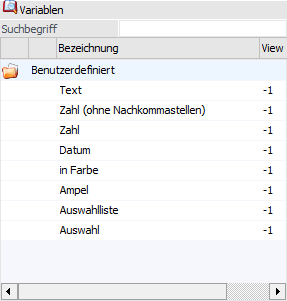
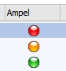
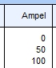

Variablenbereich "Benutzerdefiniert"
Benutzerdefiniert
Im Bereich "Variablen" des List - Assistenten steht der Variablenbereich "Benutzerdefiniert" zur Verfügung.

Mit Hilfe dieser Variablen können Listen um individuelle Felder erweitert werden, welche auch nur in der Liste zur Verfügung stehen. Diese Felder haben keinen Verweis auf andere Stammdaten oder dergleichen. Diese Felder können nur in Zusammenhang mit Datenquellen verwendet werden, eine Pflege der Daten ist auch nur bei einer Tabellenausgabe möglich.
Durch einen Doppelklick auf das Ordner-Symbol in der ersten Spalte wird die darunterliegende Ebene angezeigt. Hier können der neu zu erstellenden Liste Spalten für benutzerdefinierte Anmerkungen - sog. Annotations - hinzugefügt werden.
Im Unterschied zu den anderen Variablen bzw. Spalten bieten benutzerdefinierte Variablen Platz für eigene, individuelle Anmerkungen, wobei die folgenden Datentypen (d.h. Variablen) zur Verfügung stehen:
ü Zeichen
Spalten mit dem Typ
"Zeichen" können beliebigen Text mit einer maximallänge von 255 Zeichen
enthalten.
ü Zahl
Spalten mit dem Typ "Zahl"
können positive sowie negative Zahlen mit Nachkommastellen enthalten. Der
Zahlenwert wird als Datentyp double gespeichert.
ü Zahl (ohne
Nachkommastellen)
Spalten mit dem Typ "Zahl (ohne Nachkommastellen)" können
positive sowie negative, ganze Zahlen enthalten. Der Zahlenwert hat den Datentyp
integer, kann also maximal zehn Dezimalstellen umfassen.
ü Datum
Spalten mit dem Typ
"Datum" können einen Zeitpunkt, in Form eines Kalenderdatums und einer Uhrzeit
enthalten. Die Art bzw. Anzeige des Datums kann in der Spalte "Formatierung"
definiert werden (nähere Details entnehmen Sie bitte dem Kapitel Bereich "Variablen"- Feld
"Formatierung").
ü in Farbe
Spalten mit dem Typ
"in Farbe" dienen zur farblichen Hervorhebung / Unterlegung von
Auswertungszeilen. Die Definition der Farbe erfolgt in der Spalte
"Formatierung", wobei die Farbe als RGB-Dezimalwert hinterlegt werden kann oder
per Matchcode gewählt wird. Erfolgt keine Farbdefinition und die Variable "in
Farbe" ist im Listaufbau nur 1x vorhanden, so wird eine gelbe Farbunterlegung
automatisch genutzt.
In der Tabelle kann per Klick in die Spalte die
Farbzuweisung aus der List-Definition aktiviert bzw. deaktiviert werden. Die
Aktivierung wird hierbei auch mit Hilfe des Icon  angezeigt.
angezeigt.
Soll eine abweichende
Farbe in der Tabelle verwendet werden, so kann der Farben - Matchcode per
Doppelklick in der Spalte geöffnet werden.
ü Ampel
Spalten mit dem Typ
"Ampel" enthalten ein Symbol, das die Werte rot, gelb und grün annehmen kann.
Ein Klick auf das Symbol ändert dessen Farbe.
Außerhalb der
Tabellendarstellung, bspw. als Bildschirmausgabe werden statt den Ampel-Symbolen
Zahlenwerte dargestellt.
ü  - rot = 0
- rot = 0
ü - gelb = 50
ü - grün = 100
Beispiel


ü Auswahlliste
Spalten mit dem
Typ "Auswahlliste" enthalten Textwerte, die durch ein Drop-Down-Feld vorgegeben
werden. Mit Hilfe der Spalte "Formatierung" können hierbei Standardauswahlen
vorgegeben werden.
Hinweis
Wenn ein Element der Auswahlliste mit einem "!" endet (z.B. Achtung!), so kann die Auswahlliste in der Tabelle der Ausgabe nicht mehr dynamisch ergänzt werden.
ü Auswahl
Spalten mit dem Typ
"Auswahl" enthalten eine Checkbox.
Hinweis
Annotations werden direkt in der jeweiligen Datenquelle gespeichert. Aus diesem Grund sind die benutzerdefinierten Spalten nur dann sichtbar, wenn die Liste aus einer Datenquelle erstellt wird.